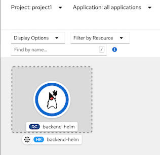
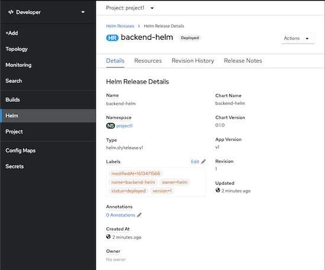

Deploy Backend app with Helm Chart
- Deploy backend app using helm chart => backend-chart
- Test with dry run
oc project project1 helm install --dry-run test ./manifests/backend-chart - Install chart
```bash
helm install backend-helm --namespace=project1 ./manifests/backend-chart
Sample Output
1 ./manifests/backend-chart NAME: backend-helm LAST DEPLOYED: Tue Feb 16 17:32:46 2021 NAMESPACE: project1 STATUS: deployed REVISION: 1 TEST SUITE: None NOTES: - Get the application URL by running these commands: http://backend-helm:8080 ```
- Check Helm Chart in Developer Console Topology view

- Helm Chart details
